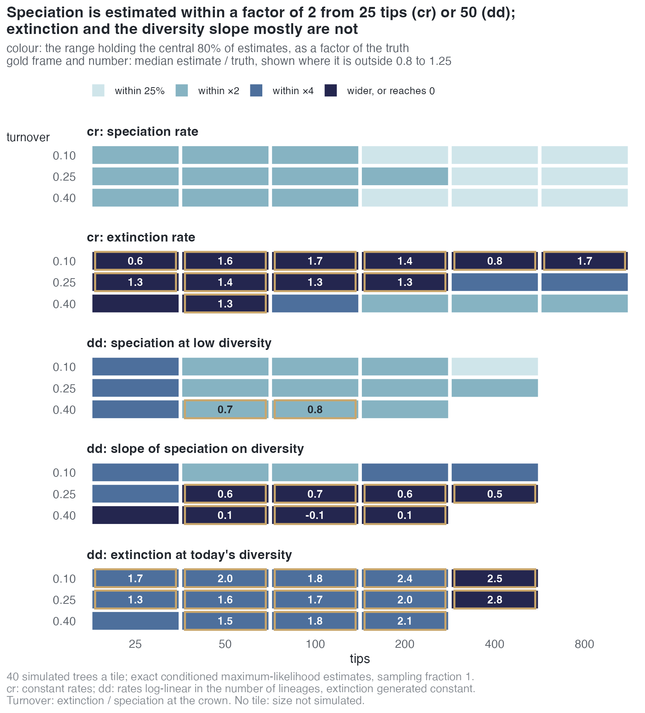
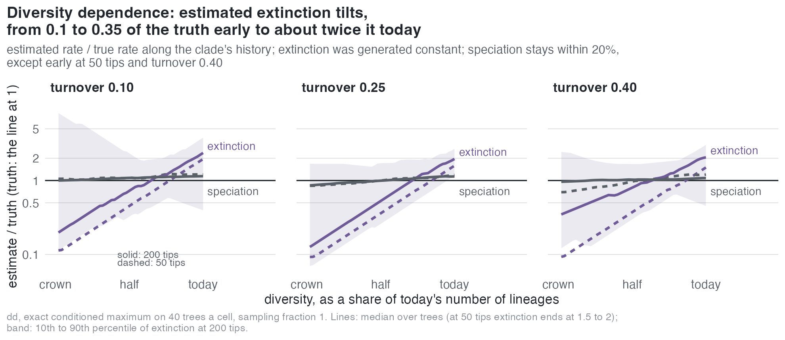
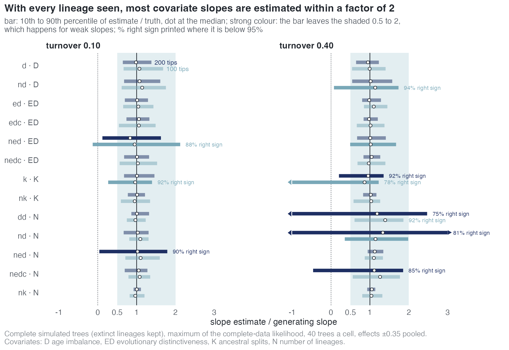
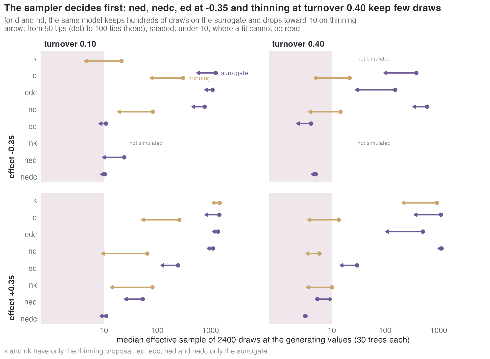
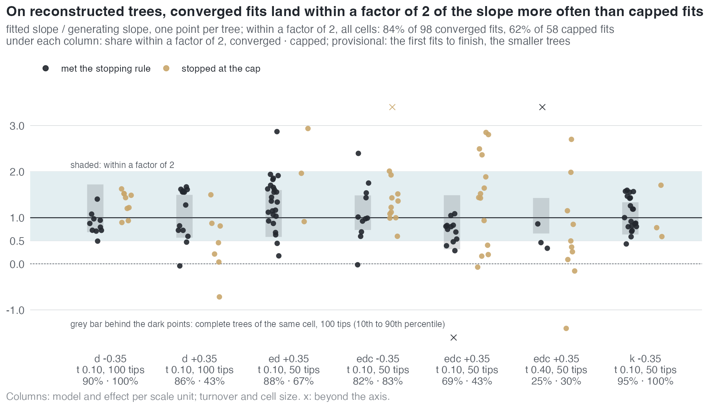

Estimability in the emphasis models
Which parameters of each model a dated tree identifies, from how many tips, and what sets the limit: the information in the tree, the estimator, or the Monte Carlo sampler behind it. Every statement below is a measurement on simulated trees with known generating values, with the likelihood conditioned on the survival of both crown lineages; the last section names the experiment behind each one. Terms are in the Glossary.
In short
- The estimator is not the limit where an exact answer exists. The Monte Carlo EM estimate sits at the exact conditioned maximum in every
crcell and in 11 of 14ddcells at complete sampling, including all nine of 25–100 tips, so what follows about those two models is a property of the trees, not of the algorithm. - Speciation is read early, extinction late. The speciation rate is within a factor of 2 of the truth from 25 tips under constant rates, and from 50 under diversity dependence. The extinction rate is not, at any size up to 800 tips, unless turnover is high; at turnover 0.40 it is from about 200 tips.
- Under diversity dependence the slowdown is read, but not how it divides. Speciation at low diversity and its slope on diversity are recovered at low turnover; the estimate tilts extinction, which was generated constant, from 0.1–0.35 of the truth early in a clade's history to 1.2–2.9 times the truth today.
- A complete tree carries enough to estimate most covariate slopes. With the extinct lineages kept, a slope of ±0.35 per scale unit is estimated within about 0.6 to 1.5 times its value at 100 tips, with the right sign on 95% of trees or more, narrowing at 200; the exceptions are weak slopes (the diversity slope at high turnover,
ned's ED slope). - On a reconstructed tree the sampler decides first.
ned,nedc,edwith a negative effect, and the thinning proposal at high turnover keep about 10 effective draws of 2400 or fewer at the generating values;d,edcandndon the surrogate proposal keep hundreds. - Where the sampler works and the fit converges, the slope mostly lands within a factor of 2 of the truth: 84% of fits that meet the stopping rule, against 62% of fits stopped at the iteration cap (provisional, on the first 156 fits of the lineage-level study).
- Conditioning on survival is a small term, but not a free one. It moves the log-likelihood by -0.01 to -0.2 at the estimates; for the lineage-level models it has to be estimated by simulation at every parameter value the fit visits.
What a tree of a given size estimates

Each tile is 40 simulated trees, read by the exact conditioned maximum-likelihood estimate. Its colour is the narrowest factor of the truth that holds the central 80% of estimates; a framed tile has a median outside 0.8 to 1.25 of the truth, and its number is that median. The rows are the parameters a user of cr and dd reads; the sections below take them in turn.
The estimator reaches the exact answer
Where the likelihood can be computed exactly, the Monte Carlo estimate can be scored against it.
| model | what is compared | result |
|---|---|---|
cr |
MCEM against the exact conditioned maximum, 25–800 tips, turnover 0.10 / 0.25 / 0.40, sampling fraction 1 and 0.8 (960 trees) | at the maximum in all 24 cells: median shortfall in log-likelihood -0.0006 to -0.014, 90th percentile of its size at most 0.08 |
dd |
the same, 25–400 tips at complete sampling, on the repaired exact reference (747 of 756 rescored trees with a valid maximum) | within 0.5 of the maximum in median and 2 at the 90th percentile in 11 of 14 cells: all nine of 25–100 tips (median shortfall -0.001 to -0.18) and two of the five of 200–400 tips. It misses at 400 tips and turnover 0.10 (median -0.55) and at 200 and 400 tips and turnover 0.25 (-0.72, -0.62); in those cells 30 to 39 of 40 fits ended on the 8-hour clock before the stopping rule |
cr, dd |
the surrogate proposal's likelihood estimate against the exact likelihood | ratio 1.000 for cr and 0.993 [0.978, 1.002] for dd |
A fit stopped by the Monte Carlo error rule sits closer to the maximum than one stopped by the default relative-change rule: on real trees, a median shortfall of -0.05 against -0.25 for cr, and -0.01 against -0.09 for dd.
Constant rates: speciation early, extinction late
- Speciation. The central 80% of estimates lies within a factor of 2 of the truth from 25 tips at every turnover, and narrows to within 10–20% at 800 tips.
- Extinction. At turnover 0.10 and 0.25 the central 80% stays wider than a factor of 2 at every size up to 800 tips. The estimate is exactly 0 on 50% of 25-tip trees at turnover 0.10, and still on 10–30% at 100 to 800 tips. At turnover 0.40 zeros fall to 0–5% from 100 tips and the central 80% falls within a factor of 2 from about 200 tips.
- The extinction rate is identified by how many lineages are missing near the present, and a tree with low turnover has few: size helps less than turnover.
Read by the rule "median within [0.8, 1.25], central 80% within [0.5, 2], 95% interval covering the truth on at least 90% of trees, at this size and every larger one", the smallest reliable size is:
| parameter | turnover 0.10 | turnover 0.25 | turnover 0.40 |
|---|---|---|---|
| speciation rate | 25 | 25 (400 with the Wald interval, whose coverage is 0.85 at 200 tips) | 25 (100 with the Wald interval) |
| extinction rate | not reliable up to 800 | not reliable up to 800 | 200 (400 with the Wald interval) |
For dd the same reading needs the curvature at the repaired maxima, which has not been computed: reliable sizes for dd are pending.
Diversity dependence: the slowdown is read, its division is not

- Speciation at low diversity is within a factor of 2 from 50 tips at every turnover (median 0.68–1.07 of the truth).
- The slope of speciation on diversity is recovered at turnover 0.10 (median 0.84–0.91, right sign on 95–100% of trees at every size). At 0.25 the median is 0.35–0.70 from 50 tips. At 0.40 the slope is weak (generated at -0.0005 to -0.03 per lineage) and its median estimate is near 0, with the right sign on 42–75% of trees.
- Extinction, generated constant, comes out rising with diversity: the median slope of extinction on diversity is positive in every cell, and the intercept falls to a tenth to a third of its value up to 200 tips. Along the clade's history the estimated rate runs from 0.1–0.35 of the truth at the crown to 1.2–2.9 times the truth today (medians over trees), crossing it at about two thirds of today's diversity.
- Speciation along the same history stays within 20% of the truth, except early in the history at 50 tips and turnover 0.40, where it starts at 0.7.
The tree constrains the overall slowdown of diversification. How much of it comes from falling speciation and how much from rising extinction is not separated by the likelihood at these sizes, and the maximum resolves the ridge towards rising extinction.
What a complete tree carries

With every lineage observed, extinct ones included, the complete-data likelihood is maximised directly. Its spread bounds what a reconstructed tree of the same size can give.
- Most slopes of ±0.35 per scale unit (on D, ED, K) are estimated within a factor of 2, typically 0.6 to 1.5 times their value at 100 tips, with the right sign on 95% of trees or more, and the range narrows at 200 tips.
- Pooled over the 40 trees of a cell, 138 of 150 coefficients lie within 10% of their generating values; the likelihood and the simulator describe the same model.
- The exception is the diversity slope at turnover 0.40 (
dd,nd,nedc), generated small because the clade must reach its size against high extinction: its ratio spreads beyond 0 and 2 even on complete trees. ned's ED slope at turnover 0.10 is generated weaker (-0.10 and +0.07 per unit): its central 80% spreads past 0, with the right sign on 82–98%.kat +0.35 reaches only 20–50 tips at the cell's settings, and its sign is right on 78–92%.
The incompleteness of a reconstructed tree, not the model, is what separates these slopes from what can be estimated in practice.
On a reconstructed tree the sampler decides first

MCEM averages over the extinct lineages a reconstructed tree hides, by drawing them from a proposal. If almost all draws carry negligible weight, no fit can be read, whatever the tree holds.
d,edcandndon the surrogate proposal keep hundreds to over a thousand effective draws at 50 and 100 tips.edwith a negative effect,nedandnedckeep 2 to 54;nedcstays at 11 or below in every cell. A larger tree lowers it further.- Turnover 0.40 lowers the effective sample 3 to 30 times for
d,ed,edcand on every thinning cell, as more of the tree is hidden;ndon the surrogate is barely affected. - The thinning proposal, the only one for
kandnk, falls under 10 in 8 of 27 cells, all at turnover 0.40 or 100 tips; fordandndthe surrogate leads it by 4 to 300 times. - 19 of the 57 cell–proposal pairs of the lineage-level study are under 10 effective draws.
Covariate slopes on reconstructed trees (provisional)
No cell of the lineage-level study has yet met its read rule (at least 80% of fits finished and a median final effective sample of 10 or more), so these are the fits written so far, not a reading.

On the first fits of the lineage-level study, which are the smaller trees of each cell:
- Fits that meet the stopping rule land within a factor of 2 of the generating slope on 84% of 98 trees, and their central 80% (0.47–1.66) is close to the complete-tree range; the sign is right on 97%.
- Fits stopped at the iteration cap or the clock land within a factor of 2 on 62% of 58 trees, their central 80% spans 0.14–2.40, and they hold 9 of the 14 estimates below 0 or above 2.5.
- Cell by cell the difference is not uniform: in
dandkat -0.35 andedcat -0.35 the capped fits do as well; it comes from the +0.35 cells ofd,edandedc. - The extinction side of
edis not bounded by the tree: its extinction intercept, its extinction slope or both ran to an edge of the parameter box on 28 of 35 fits, against 0–4 per model elsewhere.
On real trees
The same two limits appear on the 217 real trees fitted with nd: 69 fits are sampler-limited, and among the 145 that can be read, an extinction-side or D coefficient sits on an edge of the parameter box on 47.
Not yet known
- From how many tips each lineage-level coefficient is reliable: the study runs at 50 and 100 tips and moves to 200 and 400 where a coefficient is not yet reliable (E46).
- Whether the lineage-level fits that hit the iteration cap would converge given more draws (V3).
- Estimability under incomplete sampling (V6), and how it carries into model choice (V7), the covariate path (V8) and misspecified models (V9).
- Not under study: effects smaller than ±0.35 per scale unit, turnover 0.25 for the lineage-level models, and covariates that drive extinction.
Where the numbers come from
| statement | experiment | trees |
|---|---|---|
| MCEM at the exact maximum; constant rates by size | E45 | 960 cr |
diversity dependence by size; dd agreement |
E45 rescored on the repaired reference (V4) | 715 dd |
| surrogate likelihood equals the exact one | V2 | cr, dd cells |
| what a complete tree carries | V1 | 2560 complete trees |
| effective sample at the generating values; reconstructed-tree slopes | E46 (V5) | 1710 trees; 208 fits |
| size of the conditioning term; Monte Carlo survival probability | E43, E34 | — |
| real trees | E48 | 217 |
Figures and tables: sim/estimability-collect.py and sim/estimability-figures.R in the paper repository, from the per-tree results of those experiments.